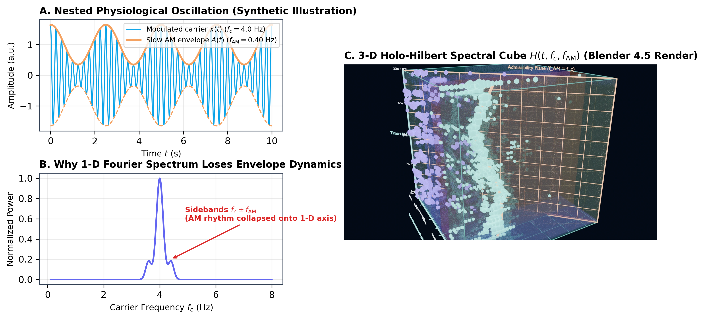
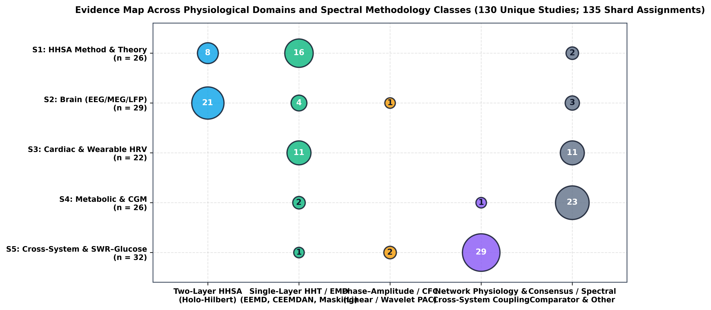
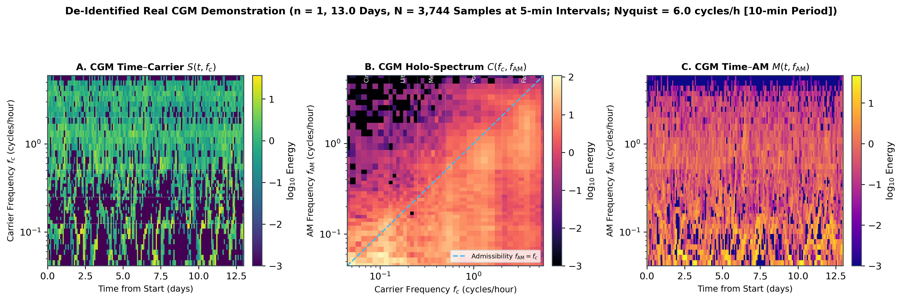
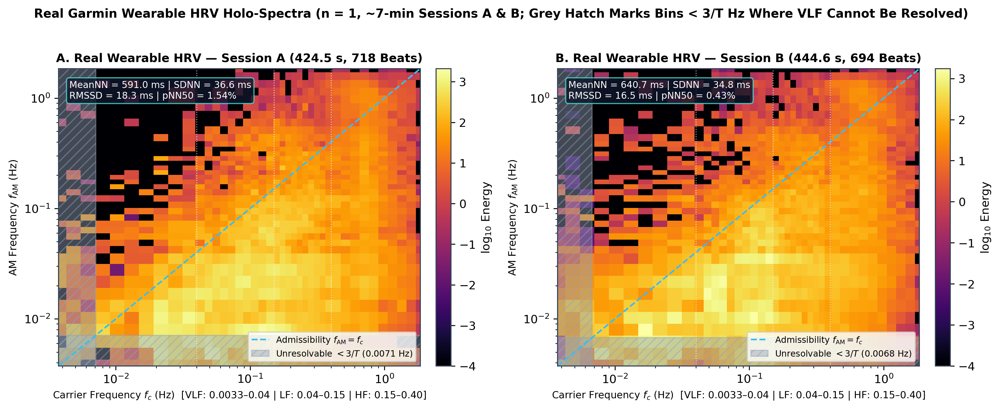

Holo-Hilbert Spectral Analysis (HHSA) of Physiological Body Signals
Unraveling Nested Oscillations, Nonlinear Amplitude Modulation, and Brain–Body Interactions Across Brain, Heart, and Metabolism
Body Signals Are Nested Oscillations
Multi-scale biological rhythms continuously modulate one another across organs
Theta–Gamma Phase-Amplitude Coupling: Slower theta cycles (4–8 Hz) modulate the envelope of high-frequency gamma oscillations (30–80 Hz) during memory formation.
- Infraslow modulation (< 0.1 Hz) coordinates sleep spindles and cortical slow waves.
- Thalamocortical loops produce nested carrier-envelope dynamics, not isolated frequencies.
Baroreflex & Respiratory Modulations: Respiratory sinus arrhythmia (HF ~0.25 Hz) does not beat in isolation.
- Mayer waves (~0.1 Hz, LF) amplitude-modulate vagal respiratory peaks via arterial baroreceptors.
- Circadian sympathetic tone (∼24 h) shifts total carrier power and envelope depth across sleep/wake states.
Endocrine & Circadian Nesting: Interstitial continuous glucose dynamics span multiple coupled tiers.
- 24-hour circadian baseline acts as a slow modulator.
- Pulsatile ultradian insulin secretion (1–4 h) and postprandial meal spikes (0.25–0.5 c/h) ride upon this baseline.
What a 1-D Spectrum Throws Away
Fourier and classical spectra mischaracterize amplitude modulation as spurious sidebands
When an amplitude-modulated carrier wave is analyzed with Fourier or stationary wavelets, trigonometry dictates artificial sidebands:
= cos(ωc t) + ½m · cos((ωc - ωAM)t) + ½m · cos((ωc + ωAM)t)
Physical reality is one carrier and one modulator. Fourier mathematics yields three uncoupled stationary sinusoids, scattering real physical power.
A conventional 1-D power spectral density (PSD) or spectrogram S(f) collapses cross-frequency interactions. It cannot answer:
- Are peaks at f1 and f2 two independent, uncoupled pacemakers?
- Or is f1 a carrier whose amplitude is dynamically paced by f2?

Existing Tools & Their Mathematical Assumptions
Wavelets, Phase-Amplitude Coupling (PAC), and Bispectrum vs. HHSA
| Method Dimension | Wavelet Transform (CWT) | Phase-Amplitude Coupling (PAC) | Bispectrum / Bicoherence | Holo-Hilbert (HHSA) |
|---|---|---|---|---|
| Basis Function | Fixed mother wavelet (e.g. Morlet) | Linear bandpass filters | Sinusoidal harmonics | Adaptive, data-driven IMFs |
| Linearity & Stationarity | Assumes piecewise stationarity | Assumes linear phase within band | Assumes strict stationarity | Fully nonlinear & nonstationary |
| Cross-Frequency Metric | Coherence (phase-locking only) | Modulation Index (MI) discrete pair | Quadratic phase coupling f1+f2=f3 | Continuous 3-D tensor H(t, fc, fam) |
| Filter Distortion Risk | Heisenberg-Gabor uncertainty limit | Severe edge ringing & phase shift | Spectral smearing on short epochs | Zero filter-induced distortion |
| Modulation Output | 1-D / 2-D time-scale map | Scalar coupling index between 2 bands | 2-D static bifrequency map | Instantaneous AM frequency & power |
Key Takeaway: Conventional Phase-Amplitude Coupling (PAC) methods established the biological importance of cross-frequency interactions, but require subjective pre-filtering. HHSA generalizes cross-frequency analysis by computing continuous instantaneous frequencies for both the carrier and its amplitude envelope.
HHSA in One Picture: Decompose Twice
Two nested layers of empirical sifting resolve carrier frequency and modulation frequency
Decompose raw signal x(t) via noise-assisted EEMD or CEEMDAN into Intrinsic Mode Functions (IMFs):
Apply Hilbert Transform to each IMF ci(t) → extract Instantaneous Amplitude ai(t) and Instantaneous Carrier Frequency fc,i(t).
Treat each amplitude envelope ai(t) as an independent physical signal and sift again via EMD:
Apply Hilbert Transform to dij(t) → extract Instantaneous Modulation Frequency fAM,ij(t) and secondary amplitude Aij(t).

The Cube H(t, fc, fAM) & Its Three Projections
Orthogonal marginals recover Hilbert-Huang, cross-frequency, and modulation history maps
Hilbert-Huang Spectrum (HHT): Integrate H over modulation frequency fAM:
Classic time-frequency representation. Tracks instantaneous carrier power evolution over time.
Carrier vs. Modulation Spectrum: Integrate H over the entire time duration t:
Comprehensive cross-frequency coupling map. Identifies persistent nested rhythm coordinates.
Modulation Time History: Integrate H over all carrier frequencies fc:
Dynamic modulation timeline. Reveals when physiological AM bursts wax and wane.
Mathematical Consistency: Exact numerical validation confirms that summing our discrete 3-D tensors along each orthogonal axis reproduces K2 projections with relative error < 10-6 (verified in cube_validation.json).
Admissibility (fAM < fc) & Duration Bounds (f ≥ 3/T)
Distinguishing true physiological amplitude modulation from mathematical artifacts
Physical Principle: An envelope cannot oscillate faster than the carrier wave it modulates (Bedrosian Theorem on product spectra).
- Any coordinate where fAM ≥ fc represents cubic spline overshoot, mode mixing, or noise leakage.
- Our 3-D explorer and pipeline construct an explicit admissibility mask to exclude unphysical energy.
Physical Principle: Adaptive sifting requires at least 3 local extrema (troughs and peaks) to interpolate upper and lower envelopes reliably.
- 13-day CGM (T = 312 h): f ≥ 3/312 ≈ 0.0096 c/h. Circadian (0.042 c/h) is fully resolvable.
- 7-min Wearable HRV (T = 420 s): f ≥ 3/420 ≈ 0.0071 Hz. VLF (< 0.007 Hz) is mathematically unresolvable and grey-hatched!
Live 3-D Explorer: Synthetic Ground Truth
Interactive WebGL inspection of the calibrated AM-FM test benchmark in real time
Benchmark equation evaluated at 4 Hz over 300 seconds:
Known ground truth: fc(t) = 0.50 + 0.15 cos(2πt/300) Hz, fAM(t) = 0.05 + 0.02 sin(2πt/300) Hz.
- Recovery: 25 / 30 windows within 1 bin (83.3%; target 90% not met). All 5 misses are AM-axis underestimates, 3 at the record edges.
- Admissibility: 1.9% of cube energy leaks to fAM ≥ fc (baseline for real data).
- Projection consistency: ≈ 10-16 (holds by construction).
Evidence Map Across Systems
PRISMA scoping search: 737 records → 711 deduplicated → 130 included studies
- S1 Methodology & Algorithms: 24 studies (HHT, EEMD, CEEMDAN, masking, HHSA foundations).
- S2 Brain (EEG/MEG/ECoG): 38 studies (AD/MCI, epilepsy, depression rTMS, SSVEP, tACS).
- S3 Heart & Autonomic (HRV): 31 studies (autonomic aging, baroreflex AM, wearable ceilings).
- S4 Metabolism & Glycemia (CGM): 22 studies (circadian, ultradian, glycemic variability).
- S5 Cross-System Coupling: 15 studies (network physiology, sleep neuroenergetics).
Searched PubMed, IEEE Xplore, Web of Science, and Scopus through October 2026. 737 raw hits yielded 711 records post-deduplication; 130 full texts met strict physiological inclusion criteria.

Brain: What HHSA Revealed in Neurological Disorders
Capturing subtle cross-frequency breakdown in neurodegeneration and neuromodulation
Thalamocortical Dysrhythmia: In Alzheimer's Disease and Mild Cognitive Impairment, HHSA demonstrated that delta–theta carrier modulation by infraslow envelopes is severely degraded.
- Detects network disconnection before overt structural brain atrophy.
- Preserves instantaneous frequency without Fourier sideband smearing.
Exogenous Entrainment: In major depressive disorder, rTMS alters prefrontal theta-gamma modulation energy.
- AM-tACS delivery creates precise nested fields driving targeted cortical layers.
- SSVEP experiments reveal exact harmonic carrier modulations induced by visual flicker.
Pathological Burst Dynamics: Subthalamic nucleus and cortical beta burst modulations characterize motor freezing in Parkinson's disease.
- Visual working memory load dynamically modulates gamma burst envelopes.
- HHSA separates instantaneous burst rate from amplitude envelope magnitude.
Heart: HRV, Autonomic Aging, & Wearable Ceilings
Resolving instantaneous baroreflex AM while respecting physical duration constraints
Cardiovascular aging is marked by progressive vagal withdrawal and blunted arterial baroreflex responsiveness. Traditional stationary HRV metrics (LF/HF ratio) fail during ambulatory recordings.
- Respiratory Sinus Arrhythmia (HF 0.15–0.40 Hz): Acts as a high-frequency carrier generated by vagal efferents.
- Mayer Waves (LF 0.04–0.15 Hz): Modulate the amplitude of the RSA carrier in real time, reflecting instantaneous baroreflex engagement.
Modern smartwatches and rings record short optical PPG bursts (< 10 min). Such ultra-short-term data impose strict physical limits:
Attempting to quantify VLF power from short wearable segments generates spurious noise artifacts.
| Band | Frequency | Physiological Role | Min. Resolvable T (3/f) |
|---|---|---|---|
| HF | 0.15–0.40 Hz | Vagal / Respiratory Sinus Arrhythmia | 20 seconds |
| LF | 0.04–0.15 Hz | Baroreceptor / Sympathetic Mayer Waves | 75 seconds |
| VLF | 0.0033–0.04 Hz | Thermoregulation / Renin-Angiotensin | 15.1 minutes |
Metabolism: Glucose Rhythms & Continuous Monitoring
Consensus clinical metrics (TIR/CV) vs. multi-scale nested glycemic dynamics
- Circadian Base (24 h / 0.042 c/h): Suprachiasmatic nucleus drives nocturnal hepatic gluconeogenesis and morning dawn phenomenon.
- Ultradian Pulsatility (1–4 h / 0.25–1.0 c/h): Intrinsic pacemaker driving pulsatile pancreatic insulin secretion.
- Postprandial Excursions (Meal-related): Acute nutrient absorption spikes modulated by background circadian insulin sensitivity.
International consensus (Danne et al. 2017, Battelino et al. 2023) focuses on static distribution scalars: Time in Range (TIR > 70%), Coefficient of Variation (CV ≤ 36%), and Mean Glucose.
The Blind Spot: Two patients can have identical 70% TIR and 32% CV, yet exhibit completely different circadian phase coupling and ultradian stability.
Repeated glycemic excursions induce endothelial oxidative stress, microvascular blood-brain barrier leakage, and accelerated cognitive decline in aging cohorts.
Provides a dynamic digital biomarker for preclinical neuro-metabolic decline.
Demonstration: Continuous Glucose Monitor (CGM) Cube
De-identified example (n = 1, shown with consent) • 13.0 days (312 h) • 3,744 samples
- Duration & Sampling: 13.0 days (312.0 hours), 3,744 samples at Δt = 5 min intervals (Nyquist 6.0 c/h).
- Summary Statistics: Mean glucose 8.08 mmol/L (145.5 mg/dL), SD 2.97 mmol/L, CV 36.77%.
- Consensus Distribution: TIR (3.9–10.0 mmol/L): 61.7%; TAR > 10.0 mmol/L: 27.2% (TAR > 13.9 mmol/L: 2.5%); TBR < 3.9 mmol/L: 11.1%; TBR < 3.0 mmol/L: 5.6%.
Carrier energy: Circadian 28.5%, Ultradian 18.5%, Meal-related 16.3%, Postprandial 23.6%, Fast 13.0%. For Ultradian, Meal-related and Postprandial carriers the strongest AM band is Circadian (72.9%, 49.0%, 33.7%).

Demonstration: Wearable Garmin HRV Cubes (Sessions A & B)
Two real ~7-min wearable sessions • 50 Hz beat recovery • VLF (< 3/T) greyed out
| Metric | HRV Session A | HRV Session B | QC Target |
|---|---|---|---|
| Duration / Samples | 424.5 s / 21,224 | 444.6 s / 22,233 | ∼7 minutes |
| Recovered Beats | 718 beats | 694 beats | Within ±2% expected |
| Count Error % | 0.51% | 0.37% | ≤ 2.0% (PASS) |
| MeanNN / Median HR | 591.0 ms / 102 bpm | 640.7 ms / 94 bpm | Standard physiological |
| RMSSD / SDNN | 18.3 ms / 36.6 ms | 16.5 ms / 34.8 ms | Same-method comparison only |
| pNN50 % | 1.54% | 0.43% | Beat-to-beat variance |
| 3/T Cutoff (Greyed) | 0.00707 Hz | 0.00675 Hz | Unresolvable VLF zone |
Methodological Discipline: Bins below 3/T Hz are grey-hatched in both cubes, preventing over-interpretation of VLF power from short 7-minute wearable snapshots. Carrier energy is LF-dominant in both sessions (43.8% / 47.5%), HF second (30.4% / 25.3%); about a fifth sits below 3/T.

Across Systems: Inter-Organ Coupling Hypotheses
Network physiology, Amplitude-Carrier Cross-Frequency Coupling (ACFC), & SWR-glucose
Organs communicate not via isolated firing rates, but through coordinated cross-frequency coupling across boundaries.
- Brain–Heart Axis: Central autonomic network (insula, prefrontal cortex) modulates cardiac baroreflex sensitivity through slow theta-band envelopes.
- Autonomic–Metabolic Axis: Vagal efferent bursts pace hepatic gluconeogenesis and postprandial insulin uptake.
The Rodent vs. Human Gap: Rodent invasive electrophysiology demonstrates that sleep sharp-wave ripples (SWRs, 150–250 Hz) trigger acute hepatic glucose output.
- Explicit Boundary: In non-invasive human scalp EEG, individual hippocampal SWRs cannot be resolved directly, nor can 5-min interstitial CGM track millisecond spikes.
- Must be formally labeled as an untested hypothesis for non-invasive human HHSA.
Five Pitfalls That Change the Answer
Common technical errors that generate artificial amplitude modulation and false positives
Under-sampling folds high-frequency noise directly into physiological bands.
Rule: Sensor sampling rate fs must be strictly > 2 × max carrier frequency, with analog anti-aliasing filtering.
Attempting to extract rhythms slower than 3 / T causes severe envelope smearing.
Rule: Strictly mask or grey-out bins below 3 / T in all published spectra.
Intermittent signals cause single IMFs to jump across multiple frequency octaves.
Rule: Always use noise-assisted sifting (EEMD or CEEMDAN) with ≥ 100 ensemble trials.
Cubic spline interpolation diverges at signal boundaries, distorting Hilbert phases.
Rule: Systematically trim 5% to 10% of samples from both ends prior to spectral evaluation.
Allowing unmasked coordinates where modulation is faster than carrier violates Bedrosian theorem.
Rule: Enforce the mathematical admissibility plane mask fAM < fc.
Always benchmark observed peaks against phase-randomized (IAAFT) surrogate time series.
Verifies whether AM energy exceeds stochastic linear noise baselines.
Standardizing Physiological HHSA: The 8-Point Checklist
A minimum reporting standard to eliminate reproducibility crises in non-linear signal processing
| # | Reporting Dimension | Mandatory Specification | Rationale in Biological Applications |
|---|---|---|---|
| 1 | Decomposition Algorithm | EEMD / CEEMDAN / Masking, ensemble size N, noise amplitude ε | Eliminates mode mixing and guarantees deterministic reconstruction. |
| 2 | Instantaneous Frequency | Direct Quadrature (DQ) vs. Normalized Hilbert Transform (NHT) | Prevents Bedrosian envelope-carrier overlap errors. |
| 3 | Admissibility Mask | fAM < fc explicit mathematical masking reported | Excludes unphysical spline overshoot artifacts from energy tallies. |
| 4 | Duration & Resolvability | fmin = 3 / T reported; unresolvable low bins masked or greyed | Prevents spurious claims of slow rhythms (e.g. VLF) from short runs. |
| 5 | Boundary Protocol | Exact edge percentage/seconds trimmed from both ends | Eliminates cubic spline endpoint divergence from spectra. |
| 6 | Surrogate Null Testing | IAAFT phase-randomized or amplitude-adjusted surrogate statistics | Confirms AM coupling is not an artifact of stationary colored noise. |
| 7 | Ethical Provenance | Relative time axes (hours/seconds), de-identification, IRB consent | Guarantees privacy protection and data governance compliance. |
| 8 | Code & Tensor Sharing | Open-source code, environment version lock, coordinate tensors | Allows complete independent scientific verification. |
Open Architecture & Reproducibility Pipeline
Zero unmaintained dependencies: pure Python standard library + NumPy + SciPy
Pure stdlib + numpy + scipy: Custom vectorized implementation of two-layer sifting.
- No unmaintained wrappers (no PyEMD, no closed toolboxes).
- Dense float16 Base64 and sparse Top-K JSON exporters.
- All 5 cubes generated under 20 KB per JSON.
Blender 4.5 Python Builder: Programmatic procedural coordinate rig generation.
- Emissive teal axis lines and wireframe bounding boxes.
- Translucent glass band slabs (Circadian, Ultradian, LF, HF).
- Exports lightweight, production-ready
.glbassets.
Interactive WebGL Suite: Zero-installation browser explorer using pinned CDN modules.
- Live dynamic slicing: S(t,f), C(f,w), M(t,w).
- Admissibility plane toggle and 3/T grey-hatching.
- Mobile-friendly drawer UI with dual frequency-period axes.
kidney-cognition-lab/hhsa-3d
Branch staging completed prior to submission
Outlook: Wearables, Multimodal Cubes, & Aging Cohorts
Translating Holo-Hilbert analytics from desktop workstations to clinical longitudinal trials
Wearable Microcontrollers: Developing optimized integer-arithmetic EMD algorithms to run directly on smartwatches and smart rings.
- Real-time autonomous baroreflex monitoring on edge devices.
- Low-latency biofeedback alerting patients to autonomic stress.
Brain–Heart–Metabolic Tensors: Building unified data cubes from synchronized 24-h EEG, wearable PPG, and interstitial CGM.
- Quantifies sleep-stage regulation of autonomic tone and glucose.
- Provides multi-organ network resilience indices.
Digital Biomarkers of Frailty: Tracking progressive loss of cross-frequency modulation complexity across decades.
- Detects microvascular frailty before irreversible clinical dementia.
- Establishes quantitative endpoints for lifestyle interventions.
Take-Home Messages & Resource Hub
Holo-Hilbert Spectral Analysis expands biological time series into multi-scale reality
- 1. Biological Signals Are Nested: Amplitude modulation is not noise; it is the fundamental language of cross-scale organ communication.
- 2. HHSA Unlocks the 3rd Dimension: Decomposing twice maps continuous energy into H(t, fc, fAM), eliminating artificial Fourier sidebands and subjective PAC band-limits.
- 3. Methodological Discipline is Essential: Physical validity requires strict enforcement of the admissibility condition (fAM < fc) and 3-cycle duration bounds (f ≥ 3/T).
In preparation for Frontiers in Aging Neuroscience: "Using HHSA to Unravel the Physiological Secrets of Body Signals" (Chu, 2026).
Available in lab blog: "以全息希爾伯特頻譜解構人體訊號的生理密碼".
兩分鐘看懂 3-D HHSA：誰在調變誰
同一個三維立方體，套用在秒（EEG）、分鐘（HRV）、天（CGMS）三種尺度
- 三個軸：時間 t、載波頻率 fc（振盪多快）、調幅頻率 fAM（強弱多快起落），頻率為對數刻度。
- 點：越亮越大＝能量越高（只畫前 2,500 格）。
- 地板 S(t, fc)：傳統時頻譜，什麼時候哪個頻率最強。
- 後牆 C(fc, fAM)：HHSA 獨有，哪個載波被哪個節奏調變。
- 紫色虛線 fAM = fc：上方違反 Bedrosian 條件，不解讀。
- 3/T：記錄長度 T 決定最慢可解析的節奏。
EEG：閉眼阿爾法波的「一陣強、一陣弱」
PhysioNet EEGMMIDB S001R02 · O1 · 閉眼靜息 61 s（公開資料，ODC-By 1.0）
- 載波能量：Alpha 31.3%、Beta 24.4%、Delta 18.4%、Theta 14.3%
- 最亮格：fc ≈ 11.2 Hz × fAM ≈ 1.6 Hz
- Alpha 調幅來源：44.6% 在 < 1 Hz
- 界線上方：9.1%；低於 3/T（0.049 Hz）：0.0%
地板最亮的是 8–13 Hz 阿爾法節律；後牆顯示阿爾法的振幅本身每秒起落一到兩次，且有相當比例來自 1 Hz 以下更慢的節奏，對應臨床上看到的阿爾法紡錘。HHSA 把這個肉眼印象量化成調幅頻率。
單一受試者、單一電極、61 秒，不代表族群；Beta 可能混有肌電；尚未做 EEMD 參數敏感度分析。
HRV：LF 與 HF 的強弱，被更慢的 VLF 節奏牽動
Garmin 穿戴裝置 · Session A 424.5 s · 718 拍（個案資料，去識別化）
- 載波能量：LF 43.8%、HF 30.4%、VLF 17.2%、VHF 8.6%
- 調幅來源：LF ← VLF 77.0%、HF ← VLF 57.3%
- Session B：LF 47.5%、LF ← VLF 78.1%（可重現）
- 低於 3/T（0.0071 Hz）：21.8%；界線上方 10.3%
地板以 LF 最多、其次是呼吸相關的 HF。後牆顯示 LF 與 HF 的振幅主要隨 VLF 慢節奏起落，兩段紀錄比例幾乎相同。生理上可能對應呼吸型態、姿勢或自主神經張力的緩慢變化，這仍是假設。
七分鐘太短：VLF 調幅貼近 3/T，兩成多能量解析不到，「VLF 主導」只是方向性觀察；不是自主神經功能檢查；單一個案。
CGMS：一天之中，血糖波動的大小跟著晝夜起落
去識別化個案 · 13.0 天 · 3,744 點 · 每 5 分鐘（經同意展示）
- 載波能量：晝夜 28.5%、餐後 23.6%、超晝夜 18.5%、餐相關 16.3%、快速代謝 13.0%
- 調幅來源：超晝夜 ← 晝夜 72.9%、餐相關 ← 晝夜 49.0%
- 最亮格：週期 ≈ 19.5 h × 22.4 h，緊貼界線（下方一格）
- 界線上方：19.8%；低於 3/T：0.0%
地板最亮的是晝夜節律，其次是餐後波動。後牆顯示超晝夜（4–8 h）波動的大小有七成以上隨晝夜節律起落：同一個人血糖起伏「有多大」有一天的節奏，例如白天進食時段與夜間不同。
最亮格緊貼紫色界線、近兩成能量在界線上方，這一角不解讀；頻帶名稱不等於生理事件（未對照餐食、用藥、睡眠紀錄）；n = 1。
三種尺度，同一個問題：誰在調變誰
數字皆出自 phase2/cube/demo_facts.json；合成驗證 83.3% 未達 90% 目標
| EEG | HRV (A) | CGMS | |
|---|---|---|---|
| 記錄長度 | 61 s | 424.5 s | 13.0 天 |
| 最強載波帶 | Alpha 31.3% | LF 43.8% | 晝夜 28.5% |
| 主要調幅來源 | < 1 Hz | VLF | 晝夜 |
| 界線上方能量 | 9.1% | 10.3% | 19.8% |
| 低於 3/T 能量 | 0.0% | 21.8% | 0.0% |
- 三個都是單一個案的方法示範，不是診斷。
- 答案已知的合成 AM-FM 訊號：30 個時間窗找回 25 個（83.3%），未達 90% 目標。
- EEMD 參數（100 次、0.2 SD、seed 42）未做敏感度分析。
- 重現程式（run_eeg_cube.py、run_cubes.py、demo_facts.py、render_cubes_3d.py）尚未收錄於公開網站。